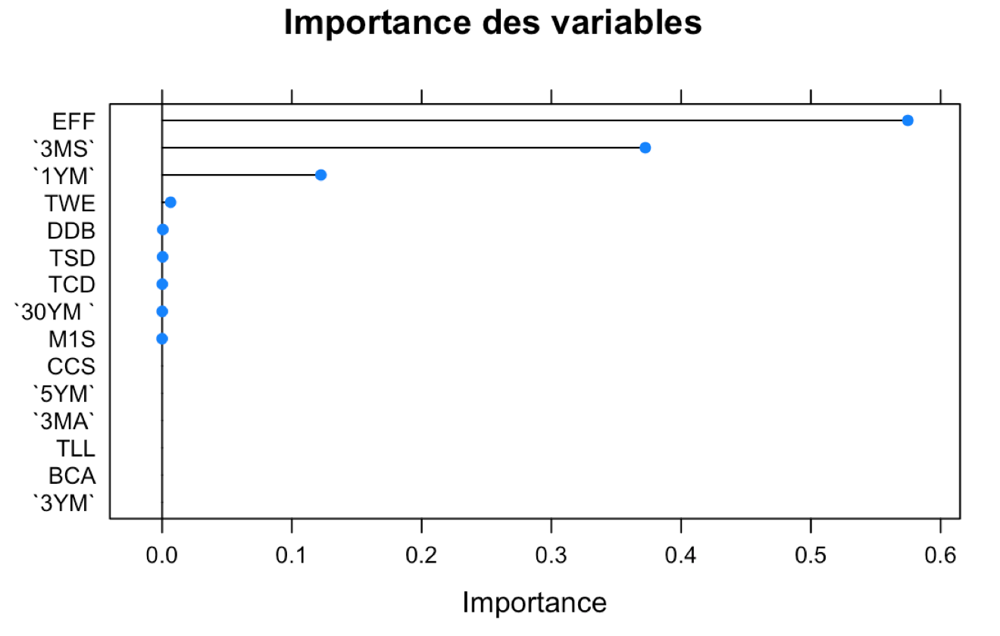

layout: true class: animated fadeIn middle numbers .footnote[ ENSIIE - 2019 ] --- #MOOC Presentation .vspace[] <center> .title[ <a href="https://www.coursera.org/learn/big-data-essentials?specialization=big-data-engineering">Big Data Essentials: HDFS, MapReduce and Spark RDD </a>] <br/> .subtitle[ Mohamed Sneiba HAMOUD ] </center> --- #MOOC Characteristics and Content .block.hcenter.w100[ * Duration: `Approx. 6 weeks with ~6-8 hours per week.` * Platform: `Coursera` * Organization: `Yandex` * Level: `Intermediate` * Certifcation: `Yes !` ] .vspace[] .block.hcenter.w100[ Big Data for Data Engineers Specialization * `Course 1: Big Data Essentials: HDFS, MapReduce and Spark RDD` * `Course 2: Big Data Analysis: Hive, Spark SQL, DataFrames and GraphFrames` * `Course 3: Big Data Applications: Machine Learning at Scale` * `Course 4: Big Data Applications: Real-Time Streaming` ] .vspace[] .block.hcenter.w100[ 3 main technologies are introduced in this course: 1. `Hadoop Distributed File System` 2. `MapReduce` 3. `Spark RDD` ] --- # Apache Hadoop .hcenter.w40[] ## History * started the development in **2004**. * Created by **Doug Cutting**. First version was released in **April 2006**. * Based on the publication of **Google FS**, **MapReduce** of Google in 2003. * As of today, it is the most popular and the most used Big Data technology in the industry. ## In an nutshell * is a **distributed system** that addresses the problems of Big Data (`3Vs`) * Has 2 major components * **HDFS (Hadoop Distributed File System)** * **Apache MapReduce** .block[ * Repository: [https://git-wip-us.apache.org/repos/asf?p=hadoop.git](https://git-wip-us.apache.org/repos/asf?p=hadoop.git) * Website: [https://hadoop.apache.org/](https://hadoop.apache.org/) --- # HDFS Architecture .hcenter.w80[] ## HDFS Components and functionnalities * :arrow_right: NameNode * :arrow_right: DataNode * :arrow_right: SecondaryNameNode * :+: Blocks replications * :+: Rack Awareness --- # MapReduce ## What is MapReduce * One of the core building blocks of processing in Hadoop framework * Programming Model that allows us to perform parallel and distributed processing on huge datasets ## Workflow .hcenter.w80[] ## Advantages * :+: Parallel processing * :+: use Data Locality --- # MapReduce Example .hcenter.w80[] --- # Apache Spark .hcenter.w40[] * Created in *2014* * Is a general-purpose cluster computing platform * Open Source wide range data processing engine .block[ * Repository: [github.com/apache/spark](github.com/apache/spark) * Website: [ spark.apache.org]( spark.apache.org)] --- # Spark Components .hcenter.w20[] Spark contains multiple components to enable faster data processing and easier development. * **Spark SQL** * **Spark Streaming** * **Spark MLlib** * **Spark GraphX** * **SparkR** --- # Spark RDD ## What is a Spark RDD .block.hcenter.w100[ An RDD is a partitioned collection of read-only records that can only be created by deterministic operations: either from data in stable storage or from other RDDs. ] ## Spark RDDs Operation RDD in Spark supports two types of operations: * :arrow_right: `Transformations`. Ex: Map(), Filter(), ReduceByKey() * :arrow_right: `Actions`. Ex: take(), reduce(), count() ## Advantages of RDDs * :+: In memory computation * :+: Parallel * :+: Partitioning * :+: Persistence * :+: Immutability * :+: Lazy Evaluation * :+: No Limitation * :+: Location Stickyness --- #Project: TF-IDF  --- #References * [Feature Selection using LASSO](https://beta.vu.nl/nl/Images/werkstuk-fonti_tcm235-836234.pdf) * [Aperçu des méthodes de sélection de variables (avec R)](https://lilbigdataboy.wordpress.com/2016/01/04/apercu-des-methodes-de-selection-de-variables-avec-r/) * [LASSO (statistiques)](https://fr.wikipedia.org/wiki/Lasso_(statistiques) * [Data set description](http://funapp.cs.bilkent.edu.tr/DataSets/Data/TR.names) * [Regularized regression](http://eric.univ-lyon2.fr/~ricco/cours/slides/regularized_regression.pdf) .vspace[]